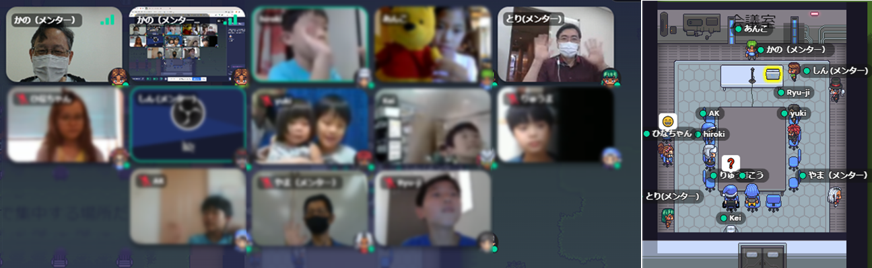
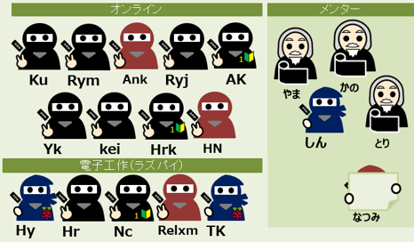
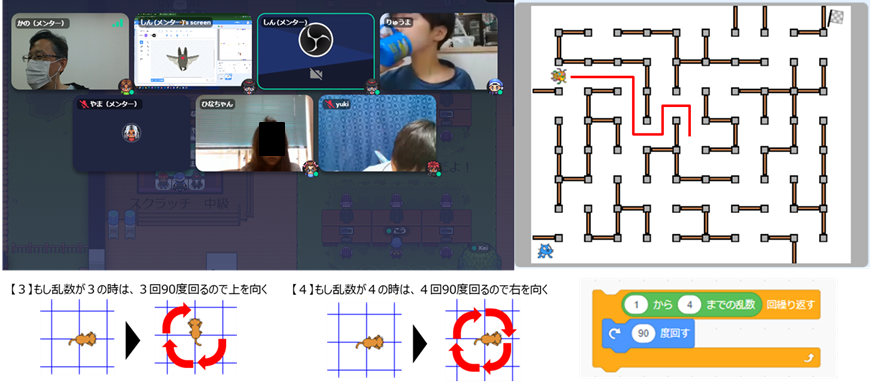
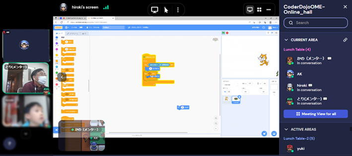
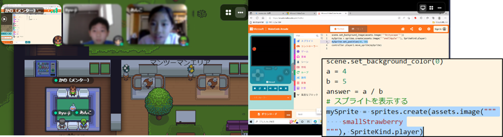
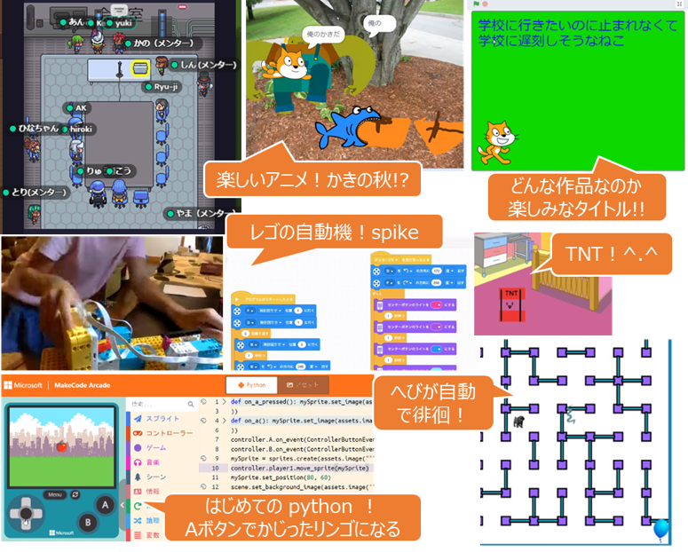
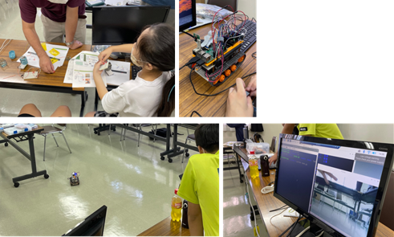

午前はオンライン。午後は会場開催。
Scratchプログラミングは楽しいぞ。しかし pythonコード も魅力的に見えるよね。本日は急遽、pythonプログラミング体験も追加しました。

今月も午前はオンライン開催とさせていただきました。午前は初めての参加者も２人加わって、プログラミング初中級に9名参加。午後は電子工作という性質上、会場開催をしていますが新たにラズパイ仲間2名が加わって計5名(と保護者,妹さんで合計10名)が参加してくれました。

Scratchプログラミング中級編をレクチャーしました。4～5月に毎回変わる迷路を制作したので、自分で動かすスプライトの他に、適役として自動的に迷路を徘徊するスプライトを作ります。小学生だけどX,Y座標を使うので少し難しかったかもしれません。今日の開催直前に無茶ぶりした大学生メンターのしんくんが、がんばってレクチャーしてくれました。一生懸命、練習してくれたニンジャもお疲れさまでした。

こちらはScratch未経験者/初心者のチーム。一生懸命、レクチャーを聞いてくれてとても嬉しい。数回参加してくれたら、みんなと同じテーマで遊べるようになるのでぜひ毎回参加してください。

臨時開催😮 あさイチの挨拶の中で、小学生ニンジャが「pythonというコードをやってみたい」という嬉しい希望をしてくれたので、今日のワークショップテーマを急遽、追加。マイクロソフトのMakeCodeを使ってpythonプログラミングを体験しました。どんなものか知りたいというものの、最初はやっぱり 1+1（イチ足すイチ）を表示するだけのコードから、掛け算・割り算。すると画像をスプライトとして表示させるコードを発見。スプライトを十字キーで動かすコードも発見。画面の背景画像を表示するコードも発見。次々とコードを発見し、あっという間の80分でした。

会場ではマイクの左側に並んで発表を待ちます。１番目の発表者は、Why大喜利,今月のテーマ「○○の秋」の柿のストーリー。続いて中級編の迷路を自動徘徊するへびさん。青梅Dojoでは初めて登場のレゴのロボット、オンラインだったけど丁寧にコードから動作まで説明してくれてよくわかりました、現物見たいなー。いつものTNT。次の画面がどんな作品なのか楽しみなタイトル。リンゴを動かしたり、かじったりできるpythonコード、どうしよっか、継続的にpythonやる？

先駆者のラズタンク開発チーム３名に加えて、新たにラズパイ電子工作の工作チーム２名が加わった。てててて♪ててて♪・・・（ドラクエのパーティ追加の音楽）。今日は冒頭から、ニンジャに配布する新SDカードのOSカーネルパニックでメンターもパニック。その場でSDカード焼き直すも復帰できずに60分。その間は、電池ON/OFF忘れを防ぐための電源LED追加と音響センサーを追加するタスクを実行してもらった。コーディングが出来なかったので、止む無くラズパイカメラをPC画面に表示しながらラズタンクの走行テストで場を盛り上げて、今日は解散。帰ってからSDカード焼かなきゃ。あ、初めての電子工作員は、乾電池とLED単色/フルカラーを練習したので、次回はラズパイに接続してプログラムでLチカとサーボモーターを動かします。

Connpassでイベント告知するので、またの参加をお待ちしています。